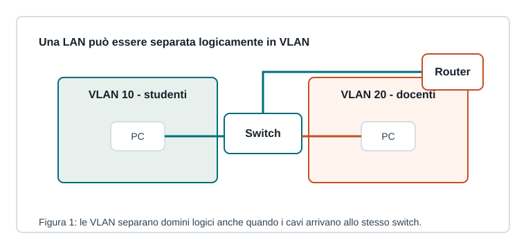

Capitoletto 3.2
Reti locali
Una LAN collega dispositivi vicini, di solito nello stesso edificio, e fornisce accesso a servizi condivisi e a Internet.

Topologia fisica e logica
La topologia fisica descrive come sono collegati cavi e apparati; la topologia logica descrive come circolano i dati. Nelle LAN moderne si usa spesso una struttura a stella estesa, con switch di accesso collegati a un centro rete.
Ethernet e Wi-Fi
| Tecnologia | Punto forte | Attenzione |
|---|---|---|
| Ethernet | stabile, veloce, bassa latenza | richiede cablaggio |
| Wi-Fi | mobilità e flessibilità | interferenze, copertura, sicurezza |
Spesso le due tecnologie convivono: i dispositivi fissi usano cavo, mentre notebook e smartphone usano access point.
Domini di collisione e broadcast
Gli switch riducono le collisioni perché ogni porta è un collegamento separato. Il broadcast, invece, può raggiungere tutti i dispositivi della stessa LAN o VLAN; per contenerlo si segmenta la rete.
VLAN
Una VLAN separa logicamente una rete locale in più reti indipendenti. È utile per dividere studenti, docenti, ospiti, server e dispositivi amministrativi.
La rete ospiti non dovrebbe poter raggiungere liberamente server, stampanti amministrative o dispositivi di gestione.
Ripasso
Che differenza c'è tra LAN fisica e VLAN?
La LAN fisica riguarda collegamenti e apparati; la VLAN crea una separazione logica del traffico.
Perché il Wi-Fi richiede attenzione alla sicurezza?
Perché il mezzo radio può essere ricevuto anche fuori dai locali e va protetto con autenticazione e cifratura adeguate.